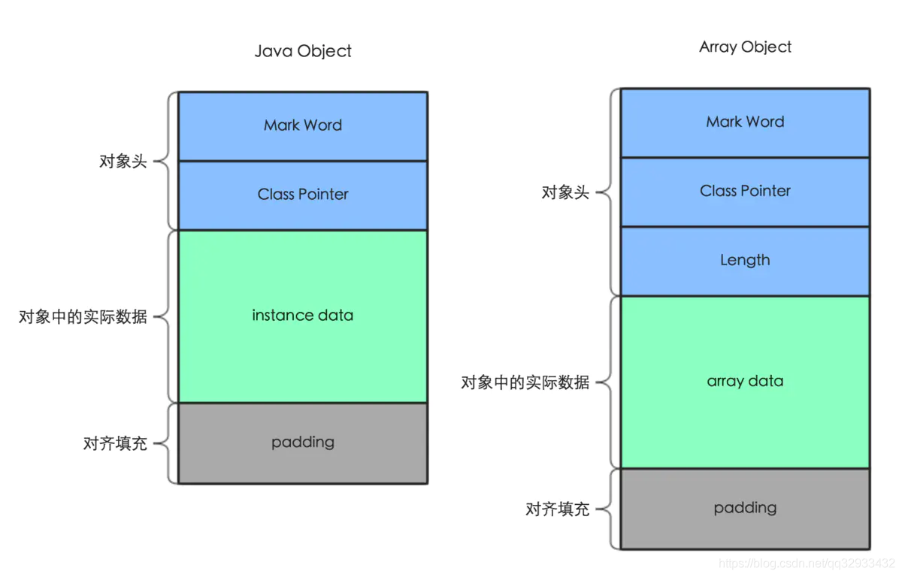

计算发展浪潮下最初的CPU从电导体-晶体管-集成电路，由最初的仙童分出的英特尔和AMD成了市场宠儿，其中英特尔创始人更是提出了经典的：
摩尔定律：集成电路上可以容纳的晶体管数目在大约每经过18个月便会增加一倍。
在CPU纳米数的同时，性能也是有着飞速提升，有单核心迈向多核AMD锐龙Threadripper(线程撕裂者)已达到64核心128线程，也给处理能力和工作效率带来极大提升，软件语言引入多线程也成了必然趋势，那么多线程下数据安全全性问题也提上了议题，于是软件语言发明了“锁”，锁怎么用？锁高效用？
JVM锁
对象内存分布

在JVM中数据存储在堆和栈中，new Object()存于我们所属值的堆中，对象在内存中存储有三部分
-
对象头自身运行时数据(Mark Word)和对象指针(Class Pointer)(Length)
- Mark Word
hashCode、GC信息、锁信息三部分,markword 中最低的三位代表锁的状态。在32位系统占4字节，在64位系统中占8字节。 - Class Pointer
指向Class对象内存地址，在32位系统占4字节，在64位系统中占8字节，如果64位开启了指针压缩则4字节。 - Length
当对象为数组时数组会有保存长度。
- Mark Word
-
实例数据- Instance Data 对象真正有效的信息，所有有效字段，大小由成员变量类型决定比如：byte1字节、int4字节、long8字节等。
-
对齐填充 对象占用空间是8字节对齐，bytes数必须是8的倍数。